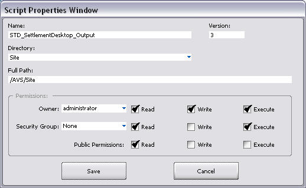
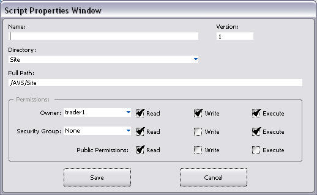
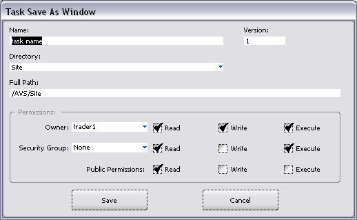
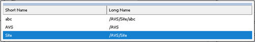

The scripting language can be used to create new scripts. These new scripts are stored with those that come with the System. A script is linked to a task. The task contains vital information about a script, such as, scheduling information. Each script has properties associated with it. The person who creates a script is the owner.
The owner can associate Read, Write and Execute Properties to the script for himself, to a security group, and to the public.
Note: This page is for v90r1 and later. For v82r1 and earlier, see AVS Script Properties.
This window can be accessed via the Operations Manager or the Trading Manager by following the steps below.
1. Select the Services tab.
2. Select the Script icon. The Plugin window displays.
3. Select a task and select an edit option. The Script Editor window displays.
4. Select File àProperties.
1. Select Script à Script Editor. The Script Editor window displays.
2. Select File àOpen. A pop up list of available scripts in the database displays. After selection, the Script Editor window displays.
3. Select File àProperties.
The following window displays:

Note: The settings in this window are the System-upgrade defaults for existing scripts. The Owner and Group information and Owner/Group/Public properties can be modified. In versions prior to v8.1r2, it is also important to note that only one security group can be assigned to each task (when one group is assigned the privilege, any previously assigned group will lose the privilege). In v8.1r2 and up, multiple selections of security groups for group permissions on scripts and queries is enabled.
None.
This window contains the following buttons:
Button |
Description |
|
Saves the requested changes after a confirmation message displays. The Script Editor window displays. |
|
|
Cancels any changes and closes this window. |
This window contains the following fields:
Field |
Description |
Name |
This is a variable character field of up to 32 characters. It represents the name of the Script towards which privileges are being applied. If the Script is new and no name has been yet assigned, data can be entered. Otherwise, this is a read-only field. |
|
Directory/Full Path |
Together, these two fields indicate the path and directory in which the script is located. During a System upgrade, all of the existing tasks and scripts in the database are placed in the /Script/Site directory. New tasks are saved to the /Script/Site directory with your user ID as the owner. Left-click in the Directory field to change the directory of a new script. A pick list displays from which to chose a new directory. |
|
Version |
This indicates the number of the current version of the script permission. The version number increases each time permissions are changed and saved. A value of “0” indicates an unedited script in its original form. |
|
Owner |
This is a pick list field of available user IDs. The pick list is disabled if this is a new script. Otherwise, select a user as the owner. The user ID of the person who creates the script is initially indicated as the owner. Only someone with the associated properties, such as the Owner or someone (preferably the database administrator) with the security privilege of either:
Note: If the original owner of the script is changed, the original owner may lose access rights to the script if they are not part of the group to which the script is assigned. For more information on superuser permissions and how they work, see Directory Browser. |
|
Security Group |
This is a pick list field of Security Groups (Security Groups are set up in the Admin Manager). Choose the group whose members have rights to the selected script and its associated properties. A security group Script DIRNODE Developers was created and assigned as a default to each of the existing tasks after a database upgrade. Note: The default name of this Security Group (Script DIRNODE Developers) can be changed in the Admin Manager. The default group script assignments can be changed. Only someone with the associated properties, such as the Owner or someone (preferably the database administrator) with the security privilege of either:
|
|
Owner/Group/Public Properties |
These are check box fields that can be toggled on and off. They grant read, write, and execute privileges to the owner of the script, the security group assigned, and to the general population of users. Note: Execute Properties are checked by the script engine. |
In adding properties for a new script, the Script Properties window defaults as follows:

Follow these steps to change the default:
Note: In editing properties for an existing script, you can change the Owner and reassign the Group if you have the proper security properties. You can also change the Owner/Group/Public properties granted.
The owner of a script has the rights to assign the rights to access this script to one security group in the system. For example, a script that is relevant to the job functions of back office personnel can be restricted to that group. Each time the Script is assigned to a group and saved, the previous definition is overwritten.
Access rights can be assigned by performing the following steps: From the Operations Manager:
IMPORTANT: In versions prior to V8.1r2, if no group is assigned to a Script, it means that ALL users can run it. In v8.1r2 and up, if a group is not assigned no one will have access to the script.
The owner of the script has the right to assign access to a script to specific security groups. However, the script’s owner must also have rights to those groups.
For example, a script owner must have access to the Front Office group to give it rights to run a script. Otherwise, the owner will not see name of the group in the pick list from which the group is selected.
If the script owner has Administrator privileges and encounters this problem, it problem can be solved as follows:
When a user saves a script, task, or query in the virtual file system, the “Save As” functionality allows the script to be saved to a directory other than those already defined. This can be done by following steps outline for creating a new directory in the Directory Browser.
The Save As Window displays:

